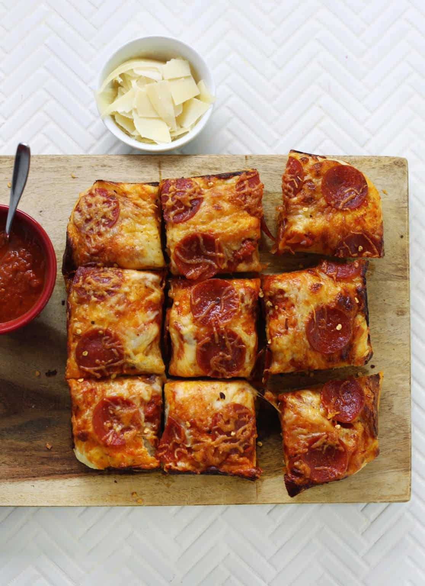

Deep Dish Pizza

Description
This deep dish pizza recipe is everything I love about pizza with a
thicker crust. This pizza gets baked in a square baking dish, and I like
to cut the pizza into small squares before serving. It’s a little
different from Chicago-style deep dish pizza, but personally I prefer
this.
Ingredients
- 2 ¼ teaspoons yeast (instant)
- 1 cup water
- ⅛ teaspoon sugar
- 2 cups all-purpose flour
- ¼ teaspoon salt
- 1 tablespoon olive oil
- ⅓ cup tomato sauce
- 3 ounces mozzarella (shredded)
- toppings of your choice
Steps
-
In a glass mixing cup or small bowl, stir together the water and sugar.
Then sprinkle the yeast over the top of the water and allow to activate
for a couple minutes.
-
In a medium to large size bowl, add the flour and salt. Pour the yeast
water into the bowl and stir until a dough ball forms. Turn the dough
out onto a floured surface and knead a few times to help the dough stick
together. Then, place the dough back into the bowl, sprinkle with some
flour so it doesn't stick too much, cover with a kitchen towel and allow
to rise for 30-40 minutes until doubled in size. If your kitchen is cold
or drafty (like mine is the winter), you can place the bowl inside a
slightly warmed oven to rise.
-
Oil the inside of an eight-inch square pan. Then turn the dough out onto
a lightly floured surface and roll into a small square. Place the dough
in the oiled pan. Top with the sauce, cheese, and toppings. Make sure to
sprinkle the cheese all the way to the edge, so it touches the pan (this
will let it get crispy as it bakes).
-
Bake the pizza at 400°F for 15-16 minutes, until the edges are browned
and the cheese is melted and bubbly.